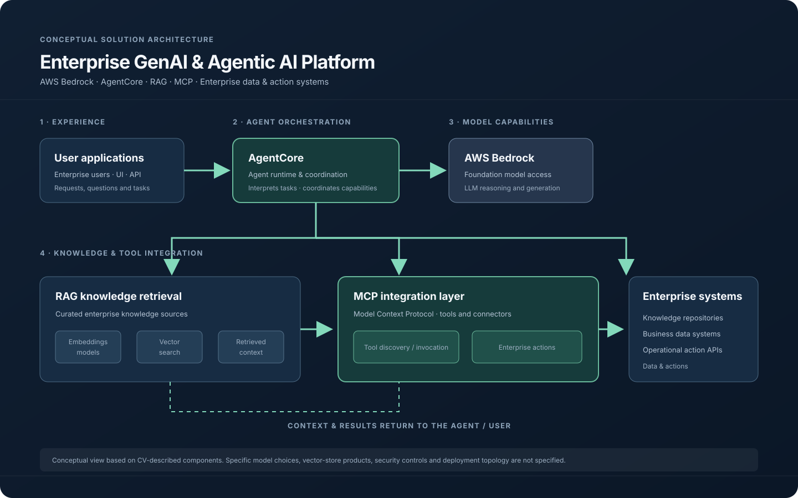

CASE 01 · ENTERPRISE AIGenAI + Agentic AI
Enterprise GenAI & Agentic AI Platform
adidas · Enterprise AI architecture
1. Challenge solvedConnect enterprise knowledge and business action systems to LLM-powered capabilities, enabling intelligent analytics, knowledge retrieval and workflow automation through enterprise AI workflows.
2. ArchitectureArchitected an enterprise GenAI and Agentic AI platform integrating AWS Bedrock, AgentCore, RAG and MCP with enterprise data and action systems. The architecture brings together an agent layer, model capabilities, retrieval and tool/system integration.
3. OutcomeEstablished reusable architecture patterns for enterprise knowledge retrieval, intelligent analytics and workflow automation. The CV does not specify a quantified platform-wide business metric.
AWS BedrockAgentCoreMCPRAGLLMsEnterprise integrations

Conceptual architecture derived from the CV. Specific model choices, vector-store products, security controls and deployment topology were not specified.
CASE 02 · KNOWLEDGE SYSTEMSRAG + Knowledge
RAG-Based Enterprise Knowledge System
adidas · Enterprise knowledge retrieval
1. Challenge solvedImprove the accuracy, relevance and traceability of enterprise AI responses by grounding model outputs in curated enterprise knowledge rather than relying only on model reasoning.
2. ArchitectureDesigned a RAG architecture combining curated knowledge sources, embedding models, vector search and retrieval pipelines connected to LLMs.
3. OutcomeEstablished a scalable knowledge-retrieval layer intended to improve response accuracy, relevance and source traceability.
LLMsEmbeddingsVector searchRAGPython
CASE 03 · AI OPERATIONSAI Observability
AI/LLM Observability & Cost Optimisation
adidas · Enterprise AI platform
1. Challenge solvedGain visibility into agent activity, model usage, token consumption and runtime performance while controlling unnecessary GenAI operating costs.
2. ArchitectureDesigned observability capabilities for agent and model usage; applied caching, session-aware context management, retrieval optimisation and selective tool invocation.
3. OutcomeImproved operational visibility and response efficiency, while reducing unnecessary token usage and optimising GenAI operating costs. No quantified savings figure is stated in the CV.
LLMsAgent telemetryCachingContext managementRetrieval optimisation
CASE 04 · CLOUD DATAData Platform
Enterprise Data Platform Modernisation
adidas · Cloud data and analytics
1. Challenge solvedModernise enterprise data capabilities to support scalable analytics and machine learning workloads, with improved performance, reliability and cloud readiness.
2. ArchitectureDefined and implemented data platform strategy using Databricks and AWS; architected scalable data platforms and ETL/ELT pipelines and led cloud-native platform modernisation and migration.
3. OutcomeEnabled scalable analytics and ML workloads and advanced the modernisation of enterprise data platforms.
DatabricksAWSPySparkPythonETL/ELT
CASE 05 · E-COMMERCEReal-time ML
Real-Time Fraud Detection Platform
adidas · Global e-commerce
1. Challenge solvedIdentify potentially fraudulent transactions and suspicious patterns across high-volume e-commerce activity while reducing manual investigation effort.
2. ArchitectureArchitected a real-time fraud detection platform using Kafka event streaming and ML pipelines, supported by scalable data and cloud workloads. The CV also identifies clustering and unsupervised learning in fraud detection work.
3. OutcomeImproved fraud detection accuracy and reduced manual effort. Fraud savings exceeding €10 million were recognised by the adidas CIO in 2024.
Apache KafkaMachine LearningClusteringDatabricksAWS
CASE 06 · HEALTHCAREStreaming + Microservices
Real-Time Healthcare Alerting Platform
Optum / UHG · Healthcare
1. Challenge solvedMake enterprise data available for time-sensitive operational alerts and support timely operational awareness and decisions.
2. ArchitectureDesigned a Kafka-based real-time alerting system using a microservices architecture, alongside enterprise data warehouse capabilities.
3. OutcomeDelivered real-time alerting capabilities to support operational workflows. The CV does not state a quantified impact.
Apache KafkaMicroservicesTeradataJavaSQL
CASE 07 · ENTERPRISE ANALYTICSData Warehousing
Enterprise Data Warehouse & ETL Optimisation
Optum / UHG · Healthcare analytics
1. Challenge solvedSupport organisation-wide reporting and analytics while improving the performance and execution cost of large-scale data pipelines.
2. ArchitectureLed development of a Teradata enterprise data warehouse; designed data integration solutions and reusable frameworks for data processing, security and automation; optimised ETL pipelines.
3. OutcomeSupported organisation-wide reporting, improved ETL performance and reduced execution costs.
TeradataSQLETLData IntegrationUnix Shell
CASE 08 · NLP & AUTOMATIONML + NLP
ML-Based Intelligent Chatbot
Optum / UHG · Healthcare
1. Challenge solvedAutomate supported user interactions and improve user experience through NLP and predictive modelling.
2. ArchitectureBuilt an ML-based chatbot combining NLP and predictive models; performed feature engineering, model training, validation and tuning on large-scale datasets.
3. OutcomeEnabled chatbot-based automation and improved user experience. The CV does not specify a quantified result or detailed deployment architecture.
PythonNLPMachine LearningFeature EngineeringPredictive Models